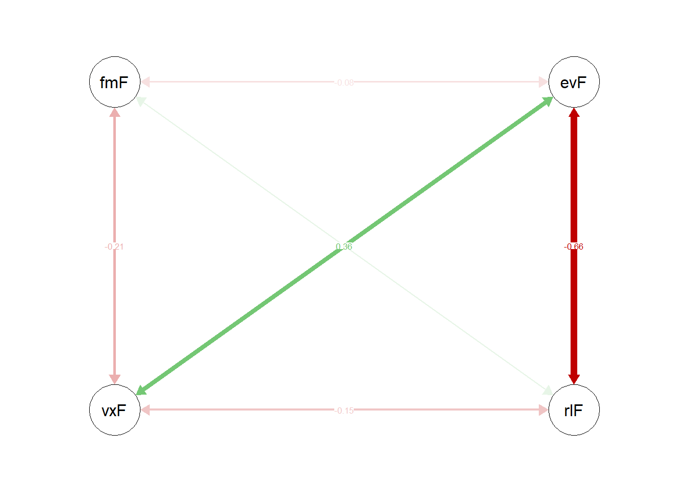
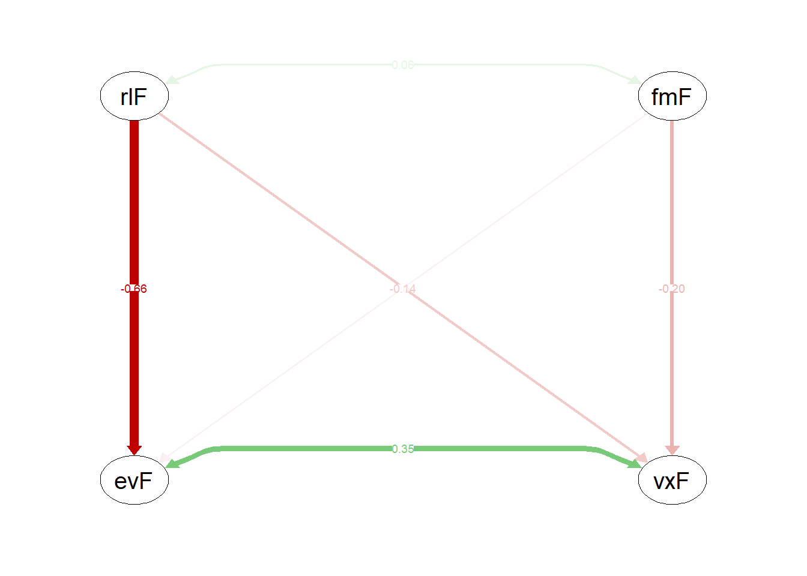

Last updated: 2019-11-11
Checks: 6 1
Knit directory: angelo/
This reproducible R Markdown analysis was created with workflowr (version 1.4.0). The Checks tab describes the reproducibility checks that were applied when the results were created. The Past versions tab lists the development history.
Great! Since the R Markdown file has been committed to the Git repository, you know the exact version of the code that produced these results.
The global environment had objects present when the code in the R Markdown file was run. These objects can affect the analysis in your R Markdown file in unknown ways. For reproduciblity it’s best to always run the code in an empty environment. Use wflow_publish or wflow_build to ensure that the code is always run in an empty environment.
The following objects were defined in the global environment when these results were created:
| Name | Class | Size |
|---|---|---|
| data | environment | 56 bytes |
| env | environment | 56 bytes |
The command set.seed(20190924) was run prior to running the code in the R Markdown file. Setting a seed ensures that any results that rely on randomness, e.g. subsampling or permutations, are reproducible.
Great job! Recording the operating system, R version, and package versions is critical for reproducibility.
Nice! There were no cached chunks for this analysis, so you can be confident that you successfully produced the results during this run.
Great job! Using relative paths to the files within your workflowr project makes it easier to run your code on other machines.
Great! You are using Git for version control. Tracking code development and connecting the code version to the results is critical for reproducibility. The version displayed above was the version of the Git repository at the time these results were generated.
Note that you need to be careful to ensure that all relevant files for the analysis have been committed to Git prior to generating the results (you can use wflow_publish or wflow_git_commit). workflowr only checks the R Markdown file, but you know if there are other scripts or data files that it depends on. Below is the status of the Git repository when the results were generated:
Ignored files:
Ignored: .Rhistory
Ignored: .Rproj.user/
Untracked files:
Untracked: analysis/funcs.R
Untracked: data/Study 1 - Data Matrix (Complete).csv
Untracked: data/Study 1 - Data Matrix (Complete).xls
Untracked: data/Study 1 - Data Matrix.csv
Untracked: data/Study 1 - Data Matrix.xls
Untracked: data/Study 1 - Reversed encoded and Likert scales.doc
Untracked: data/Study 2 - Data Matrix (with control item).xls
Untracked: data/Study 2 - Data Matrix.csv
Untracked: data/Study 2 - Data Matrix.xls
Untracked: data/Study 2 - Reversed encoded and Likert scales.doc
Note that any generated files, e.g. HTML, png, CSS, etc., are not included in this status report because it is ok for generated content to have uncommitted changes.
These are the previous versions of the R Markdown and HTML files. If you’ve configured a remote Git repository (see ?wflow_git_remote), click on the hyperlinks in the table below to view them.
| File | Version | Author | Date | Message |
|---|---|---|---|---|
| html | 6ccdfa6 | StephanLewandowsky | 2019-10-25 | Build site. |
| html | 92447e1 | StephanLewandowsky | 2019-10-25 | Build site. |
| html | 3462fa7 | StephanLewandowsky | 2019-10-23 | Build site. |
| Rmd | 0d2f1cd | StephanLewandowsky | 2019-10-23 | text message |
| html | 9c1ecb1 | StephanLewandowsky | 2019-10-23 | Build site. |
| Rmd | bd870cf | StephanLewandowsky | 2019-10-23 | text message |
| html | b5aabd4 | StephanLewandowsky | 2019-10-23 | Build site. |
| Rmd | 65ab92b | StephanLewandowsky | 2019-10-23 | text message |
| html | a2bb001 | StephanLewandowsky | 2019-10-23 | Build site. |
| Rmd | 2a74071 | StephanLewandowsky | 2019-10-23 | text message |
| html | 1299fd0 | StephanLewandowsky | 2019-10-23 | Build site. |
| Rmd | f9b770e | StephanLewandowsky | 2019-10-23 | text message |
| html | ce6cfc4 | StephanLewandowsky | 2019-10-23 | Build site. |
| Rmd | 7d34b2d | StephanLewandowsky | 2019-10-23 | Add recovery simulation |
rm(list=ls())
library(lattice)
library(stargazer)
library(tidyverse)
library(lme4)
library(lavaan)
library(semPlot)
library(semTools)
library(RColorBrewer)
library(gridExtra)
library(stringr)
library(Hmisc)
library(reshape2)
library(psych)
library(scales)
library(summarytools) #contains descr()
library(workflowr)
source("analysis/funcs.r")#nomenclature of variables
# QF Free market endorsement
# QE accept evolution
# QR religion
# QV vaccinations
simMod <- 'fmfac =~ 0.5 * QF.1 + 0.5 * QF.2 + 0.6 * QF.3 + 0.4 * QF.4 + 0.5 * QF.5
evfac =~ 0.5 * QE.1 + 0.5 * QE.2 + 0.6 * QE.3 + 0.4 * QE.4 + 0.5 * QE.5
rlfac =~ 0.4 * QR.1 + 0.4 * QR.2 + 0.3 * QR.3 + 0.5 * QR.4 + 0.2 * QR.5
vxfac =~ 0.5 * QV.1 + 0.5 * QV.2 + 0.6 * QV.3 + 0.4 * QV.4 + 0.5 * QV.5
vxfac ~ (-0.2) * fmfac + (- 0.2) * rlfac
evfac ~ (-0.1) * fmfac + (- 0.7) * rlfac
vxfac ~~ 0.4 * evfac
'
simDat <- simulateData(model = simMod, model.type = "sem", sample.nobs = 1000, ov.var = NULL,
group.label = NULL, empirical = FALSE,
return.type = "data.frame", return.fit = FALSE,
debug = FALSE, standardized = FALSE)
fitsimMod <- 'fmfac =~ QF.1 + QF.2 + QF.3 + QF.4 + QF.5
evfac =~ QE.1 + QE.2 + QE.3 + QE.4 + QE.5
rlfac =~ QR.1 + QR.2 + QR.3 + QR.4 + QR.5
vxfac =~ QV.1 + QV.2 + QV.3 + QV.4 + QV.5
vxfac ~ fmfac + rlfac
evfac ~ fmfac + rlfac
'
fit <- sem(fitsimMod,data=simDat)
summary(fit,standardized=TRUE, fit.measures=TRUE)lavaan 0.6-3 ended normally after 60 iterations
Optimization method NLMINB
Number of free parameters 46
Number of observations 1000
Estimator ML
Model Fit Test Statistic 167.566
Degrees of freedom 164
P-value (Chi-square) 0.408
Model test baseline model:
Minimum Function Test Statistic 1749.999
Degrees of freedom 190
P-value 0.000
User model versus baseline model:
Comparative Fit Index (CFI) 0.998
Tucker-Lewis Index (TLI) 0.997
Loglikelihood and Information Criteria:
Loglikelihood user model (H0) -30085.996
Loglikelihood unrestricted model (H1) -30002.213
Number of free parameters 46
Akaike (AIC) 60263.991
Bayesian (BIC) 60489.748
Sample-size adjusted Bayesian (BIC) 60343.650
Root Mean Square Error of Approximation:
RMSEA 0.005
90 Percent Confidence Interval 0.000 0.015
P-value RMSEA <= 0.05 1.000
Standardized Root Mean Square Residual:
SRMR 0.025
Parameter Estimates:
Information Expected
Information saturated (h1) model Structured
Standard Errors Standard
Latent Variables:
Estimate Std.Err z-value P(>|z|) Std.lv Std.all
fmfac =~
QF.1 1.000 0.541 0.481
QF.2 0.916 0.118 7.771 0.000 0.495 0.425
QF.3 1.119 0.133 8.439 0.000 0.605 0.521
QF.4 0.704 0.101 6.989 0.000 0.381 0.354
QF.5 1.086 0.129 8.389 0.000 0.588 0.510
evfac =~
QE.1 1.000 0.582 0.497
QE.2 1.053 0.102 10.328 0.000 0.613 0.513
QE.3 1.351 0.120 11.287 0.000 0.786 0.624
QE.4 0.931 0.095 9.800 0.000 0.542 0.469
QE.5 1.138 0.106 10.702 0.000 0.662 0.550
rlfac =~
QR.1 1.000 0.418 0.389
QR.2 0.927 0.151 6.129 0.000 0.388 0.375
QR.3 0.637 0.133 4.771 0.000 0.266 0.246
QR.4 1.310 0.196 6.671 0.000 0.548 0.478
QR.5 0.495 0.120 4.136 0.000 0.207 0.203
vxfac =~
QV.1 1.000 0.577 0.491
QV.2 0.869 0.105 8.309 0.000 0.501 0.458
QV.3 1.044 0.120 8.704 0.000 0.602 0.512
QV.4 0.764 0.100 7.644 0.000 0.441 0.393
QV.5 0.864 0.104 8.269 0.000 0.498 0.453
Regressions:
Estimate Std.Err z-value P(>|z|) Std.lv Std.all
vxfac ~
fmfac -0.216 0.063 -3.444 0.001 -0.203 -0.203
rlfac -0.175 0.091 -1.929 0.054 -0.127 -0.127
evfac ~
fmfac -0.042 0.057 -0.726 0.468 -0.039 -0.039
rlfac -0.887 0.144 -6.163 0.000 -0.638 -0.638
Covariances:
Estimate Std.Err z-value P(>|z|) Std.lv Std.all
fmfac ~~
rlfac 0.014 0.014 0.970 0.332 0.062 0.062
.evfac ~~
.vxfac 0.087 0.020 4.333 0.000 0.348 0.348
Variances:
Estimate Std.Err z-value P(>|z|) Std.lv Std.all
.QF.1 0.974 0.056 17.465 0.000 0.974 0.769
.QF.2 1.113 0.059 18.797 0.000 1.113 0.819
.QF.3 0.981 0.060 16.260 0.000 0.981 0.728
.QF.4 1.010 0.050 20.059 0.000 1.010 0.874
.QF.5 0.981 0.059 16.614 0.000 0.981 0.740
.QE.1 1.034 0.054 19.178 0.000 1.034 0.753
.QE.2 1.051 0.056 18.880 0.000 1.051 0.737
.QE.3 0.968 0.060 16.114 0.000 0.968 0.610
.QE.4 1.045 0.053 19.635 0.000 1.045 0.781
.QE.5 1.014 0.056 18.133 0.000 1.014 0.698
.QR.1 0.981 0.052 18.706 0.000 0.981 0.849
.QR.2 0.918 0.048 19.011 0.000 0.918 0.859
.QR.3 1.101 0.052 21.069 0.000 1.101 0.939
.QR.4 1.012 0.063 16.159 0.000 1.012 0.771
.QR.5 0.996 0.046 21.501 0.000 0.996 0.959
.QV.1 1.049 0.060 17.505 0.000 1.049 0.759
.QV.2 0.949 0.052 18.319 0.000 0.949 0.791
.QV.3 1.020 0.060 16.915 0.000 1.020 0.738
.QV.4 1.065 0.054 19.597 0.000 1.065 0.846
.QV.5 0.961 0.052 18.420 0.000 0.961 0.795
fmfac 0.293 0.050 5.827 0.000 1.000 1.000
.evfac 0.199 0.036 5.540 0.000 0.588 0.588
rlfac 0.175 0.040 4.411 0.000 1.000 1.000
.vxfac 0.312 0.052 5.982 0.000 0.940 0.940freemarketvars <- paste("QF.",c(1:5),sep="")
fmmod <- c("fm =~ ",paste(freemarketvars,collapse=" + "))
invisible(fmgof<-fitMM (fmmod,simDat))lavaan 0.6-3 ended normally after 33 iterations
Optimization method NLMINB
Number of free parameters 10
Number of observations 1000
Estimator ML
Model Fit Test Statistic 0.515
Degrees of freedom 5
P-value (Chi-square) 0.992
Model test baseline model:
Minimum Function Test Statistic 344.487
Degrees of freedom 10
P-value 0.000
User model versus baseline model:
Comparative Fit Index (CFI) 1.000
Tucker-Lewis Index (TLI) 1.027
Loglikelihood and Information Criteria:
Loglikelihood user model (H0) -7556.691
Loglikelihood unrestricted model (H1) -7556.433
Number of free parameters 10
Akaike (AIC) 15133.382
Bayesian (BIC) 15182.459
Sample-size adjusted Bayesian (BIC) 15150.699
Root Mean Square Error of Approximation:
RMSEA 0.000
90 Percent Confidence Interval 0.000 0.000
P-value RMSEA <= 0.05 1.000
Standardized Root Mean Square Residual:
SRMR 0.005
Parameter Estimates:
Information Expected
Information saturated (h1) model Structured
Standard Errors Standard
Latent Variables:
Estimate Std.Err z-value P(>|z|) Std.lv Std.all
fm =~
QF.1 1.000 0.548 0.487
QF.2 0.901 0.117 7.731 0.000 0.494 0.424
QF.3 1.088 0.130 8.360 0.000 0.596 0.514
QF.4 0.687 0.099 6.914 0.000 0.376 0.350
QF.5 1.085 0.130 8.370 0.000 0.594 0.516
Variances:
Estimate Std.Err z-value P(>|z|) Std.lv Std.all
.QF.1 0.967 0.056 17.188 0.000 0.967 0.763
.QF.2 1.114 0.059 18.751 0.000 1.114 0.820
.QF.3 0.992 0.061 16.376 0.000 0.992 0.736
.QF.4 1.013 0.050 20.077 0.000 1.013 0.877
.QF.5 0.973 0.060 16.300 0.000 0.973 0.734
fm 0.300 0.051 5.851 0.000 1.000 1.000
lhs op rhs mi epc sepc.lv sepc.all sepc.nox
20 QF.3 ~~ QF.5 0.294 -0.029 -0.029 -0.030 -0.030
17 QF.2 ~~ QF.4 0.201 -0.018 -0.018 -0.017 -0.017
19 QF.3 ~~ QF.4 0.194 0.018 0.018 0.018 0.018
14 QF.1 ~~ QF.4 0.127 -0.014 -0.014 -0.014 -0.014evovars <- paste("QE.",c(1:5),sep="")
evmod <- c("ev =~ ",paste(evovars,collapse=" + "))
invisible(evgof<-fitMM (evmod,simDat))lavaan 0.6-3 ended normally after 29 iterations
Optimization method NLMINB
Number of free parameters 10
Number of observations 1000
Estimator ML
Model Fit Test Statistic 7.600
Degrees of freedom 5
P-value (Chi-square) 0.180
Model test baseline model:
Minimum Function Test Statistic 587.068
Degrees of freedom 10
P-value 0.000
User model versus baseline model:
Comparative Fit Index (CFI) 0.995
Tucker-Lewis Index (TLI) 0.991
Loglikelihood and Information Criteria:
Loglikelihood user model (H0) -7704.142
Loglikelihood unrestricted model (H1) -7700.342
Number of free parameters 10
Akaike (AIC) 15428.285
Bayesian (BIC) 15477.362
Sample-size adjusted Bayesian (BIC) 15445.602
Root Mean Square Error of Approximation:
RMSEA 0.023
90 Percent Confidence Interval 0.000 0.053
P-value RMSEA <= 0.05 0.924
Standardized Root Mean Square Residual:
SRMR 0.016
Parameter Estimates:
Information Expected
Information saturated (h1) model Structured
Standard Errors Standard
Latent Variables:
Estimate Std.Err z-value P(>|z|) Std.lv Std.all
ev =~
QE.1 1.000 0.570 0.486
QE.2 1.057 0.109 9.729 0.000 0.602 0.504
QE.3 1.400 0.132 10.590 0.000 0.798 0.633
QE.4 0.960 0.102 9.400 0.000 0.547 0.473
QE.5 1.171 0.115 10.161 0.000 0.667 0.554
Variances:
Estimate Std.Err z-value P(>|z|) Std.lv Std.all
.QE.1 1.048 0.055 18.890 0.000 1.048 0.764
.QE.2 1.064 0.057 18.524 0.000 1.064 0.746
.QE.3 0.950 0.064 14.780 0.000 0.950 0.599
.QE.4 1.039 0.054 19.138 0.000 1.039 0.776
.QE.5 1.008 0.058 17.349 0.000 1.008 0.694
ev 0.324 0.050 6.551 0.000 1.000 1.000
lhs op rhs mi epc sepc.lv sepc.all sepc.nox
16 QE.2 ~~ QE.3 4.525 -0.110 -0.110 -0.109 -0.109
14 QE.1 ~~ QE.4 3.339 -0.075 -0.075 -0.072 -0.072
13 QE.1 ~~ QE.3 1.863 0.068 0.068 0.068 0.068
12 QE.1 ~~ QE.2 1.665 0.055 0.055 0.052 0.052relvars <- paste("QR.",c(1:5),sep="")
relmod <- c("rl =~ ",paste(relvars,collapse=" + "))
invisible(relgof<-fitMM (relmod,simDat))lavaan 0.6-3 ended normally after 39 iterations
Optimization method NLMINB
Number of free parameters 10
Number of observations 1000
Estimator ML
Model Fit Test Statistic 4.337
Degrees of freedom 5
P-value (Chi-square) 0.502
Model test baseline model:
Minimum Function Test Statistic 127.957
Degrees of freedom 10
P-value 0.000
User model versus baseline model:
Comparative Fit Index (CFI) 1.000
Tucker-Lewis Index (TLI) 1.011
Loglikelihood and Information Criteria:
Loglikelihood user model (H0) -7373.290
Loglikelihood unrestricted model (H1) -7371.121
Number of free parameters 10
Akaike (AIC) 14766.579
Bayesian (BIC) 14815.657
Sample-size adjusted Bayesian (BIC) 14783.896
Root Mean Square Error of Approximation:
RMSEA 0.000
90 Percent Confidence Interval 0.000 0.041
P-value RMSEA <= 0.05 0.986
Standardized Root Mean Square Residual:
SRMR 0.015
Parameter Estimates:
Information Expected
Information saturated (h1) model Structured
Standard Errors Standard
Latent Variables:
Estimate Std.Err z-value P(>|z|) Std.lv Std.all
rl =~
QR.1 1.000 0.427 0.397
QR.2 0.991 0.195 5.087 0.000 0.423 0.409
QR.3 0.537 0.145 3.707 0.000 0.229 0.212
QR.4 1.248 0.249 5.020 0.000 0.533 0.465
QR.5 0.470 0.134 3.520 0.000 0.201 0.197
Variances:
Estimate Std.Err z-value P(>|z|) Std.lv Std.all
.QR.1 0.974 0.059 16.421 0.000 0.974 0.842
.QR.2 0.889 0.056 15.947 0.000 0.889 0.832
.QR.3 1.120 0.053 20.944 0.000 1.120 0.955
.QR.4 1.028 0.076 13.605 0.000 1.028 0.783
.QR.5 0.999 0.047 21.145 0.000 0.999 0.961
rl 0.182 0.049 3.724 0.000 1.000 1.000
lhs op rhs mi epc sepc.lv sepc.all sepc.nox
18 QR.2 ~~ QR.5 3.209 -0.067 -0.067 -0.072 -0.072
14 QR.1 ~~ QR.4 2.025 -0.107 -0.107 -0.107 -0.107
21 QR.4 ~~ QR.5 1.533 0.055 0.055 0.054 0.054
12 QR.1 ~~ QR.2 1.336 0.068 0.068 0.073 0.073vaxvars <- paste("QV.",c(1:5),sep="")
vaxmod <- c("vx =~ ",paste(vaxvars,collapse=" + "))
invisible(vaxgof<-fitMM (vaxmod,simDat))lavaan 0.6-3 ended normally after 32 iterations
Optimization method NLMINB
Number of free parameters 10
Number of observations 1000
Estimator ML
Model Fit Test Statistic 2.389
Degrees of freedom 5
P-value (Chi-square) 0.793
Model test baseline model:
Minimum Function Test Statistic 347.851
Degrees of freedom 10
P-value 0.000
User model versus baseline model:
Comparative Fit Index (CFI) 1.000
Tucker-Lewis Index (TLI) 1.015
Loglikelihood and Information Criteria:
Loglikelihood user model (H0) -7546.828
Loglikelihood unrestricted model (H1) -7545.634
Number of free parameters 10
Akaike (AIC) 15113.656
Bayesian (BIC) 15162.734
Sample-size adjusted Bayesian (BIC) 15130.973
Root Mean Square Error of Approximation:
RMSEA 0.000
90 Percent Confidence Interval 0.000 0.028
P-value RMSEA <= 0.05 0.998
Standardized Root Mean Square Residual:
SRMR 0.010
Parameter Estimates:
Information Expected
Information saturated (h1) model Structured
Standard Errors Standard
Latent Variables:
Estimate Std.Err z-value P(>|z|) Std.lv Std.all
vx =~
QV.1 1.000 0.584 0.497
QV.2 0.856 0.107 8.031 0.000 0.500 0.456
QV.3 1.042 0.124 8.391 0.000 0.608 0.517
QV.4 0.757 0.102 7.444 0.000 0.442 0.394
QV.5 0.832 0.105 7.911 0.000 0.485 0.441
Variances:
Estimate Std.Err z-value P(>|z|) Std.lv Std.all
.QV.1 1.041 0.062 16.879 0.000 1.041 0.753
.QV.2 0.951 0.053 17.983 0.000 0.951 0.792
.QV.3 1.012 0.062 16.238 0.000 1.012 0.732
.QV.4 1.064 0.055 19.332 0.000 1.064 0.845
.QV.5 0.974 0.053 18.335 0.000 0.974 0.805
vx 0.341 0.057 5.943 0.000 1.000 1.000
lhs op rhs mi epc sepc.lv sepc.all sepc.nox
18 QV.2 ~~ QV.5 1.967 0.058 0.058 0.060 0.060
14 QV.1 ~~ QV.4 0.822 0.041 0.041 0.039 0.039
21 QV.4 ~~ QV.5 0.636 -0.032 -0.032 -0.032 -0.032
12 QV.1 ~~ QV.2 0.445 -0.031 -0.031 -0.031 -0.031fmSI <- singleindmodel(freemarketvars,NULL,simDat)
evoSI <- singleindmodel(evovars, NULL,simDat)
relSI <- singleindmodel(relvars, NULL,simDat)
vaxSI <- singleindmodel(vaxvars, NULL,simDat)
compositeDat <- data.frame ( #compute composite scores for the SI models
fm = apply(simDat[,freemarketvars], 1,mean),
evo = apply(simDat[,evovars], 1,mean),
rel = apply(simDat[,relvars], 1,mean),
vax = apply(simDat[,vaxvars], 1,mean)
)
#compute correlations of composite
cor(compositeDat) fm evo rel vax
fm 1.00000000 -0.04945464 0.03019846 -0.12006308
evo -0.04945464 1.00000000 -0.33959236 0.22296357
rel 0.03019846 -0.33959236 1.00000000 -0.07212953
vax -0.12006308 0.22296357 -0.07212953 1.00000000correl <- c("evoFac =~ evo
religFac =~ rel
vaxFac =~ vax
fmFac =~ fm
evo ~~ ", evoSI$eSImod, "*evo",
"rel ~~", relSI$eSImod, "*rel",
"vax ~~", vaxSI$eSImod, "*vax",
"fm ~~", fmSI$eSImod, "*fm"
)
fitsSIcor <- sem(correl, compositeDat, std.lv=TRUE, estimator="ML")
summary(fitsSIcor,standardized=TRUE, fit.measures=TRUE)lavaan 0.6-3 ended normally after 22 iterations
Optimization method NLMINB
Number of free parameters 10
Number of observations 1000
Estimator ML
Model Fit Test Statistic 0.000
Degrees of freedom 0
Model test baseline model:
Minimum Function Test Statistic 188.828
Degrees of freedom 6
P-value 0.000
User model versus baseline model:
Comparative Fit Index (CFI) 1.000
Tucker-Lewis Index (TLI) 1.000
Loglikelihood and Information Criteria:
Loglikelihood user model (H0) -4037.825
Loglikelihood unrestricted model (H1) -4037.825
Number of free parameters 10
Akaike (AIC) 8095.649
Bayesian (BIC) 8144.727
Sample-size adjusted Bayesian (BIC) 8112.966
Root Mean Square Error of Approximation:
RMSEA 0.000
90 Percent Confidence Interval 0.000 0.000
P-value RMSEA <= 0.05 NA
Standardized Root Mean Square Residual:
SRMR 0.000
Parameter Estimates:
Information Expected
Information saturated (h1) model Structured
Standard Errors Standard
Latent Variables:
Estimate Std.Err z-value P(>|z|) Std.lv Std.all
evoFac =~
evo 0.636 0.021 29.719 0.000 0.636 0.815
religFac =~
rel 0.362 0.020 17.694 0.000 0.362 0.629
vaxFac =~
vax 0.523 0.020 25.753 0.000 0.523 0.759
fmFac =~
fm 0.522 0.020 25.639 0.000 0.522 0.757
Covariances:
Estimate Std.Err z-value P(>|z|) Std.lv Std.all
evoFac ~~
religFac -0.662 0.053 -12.528 0.000 -0.662 -0.662
vaxFac 0.360 0.048 7.580 0.000 0.360 0.360
fmFac -0.080 0.051 -1.569 0.117 -0.080 -0.080
religFac ~~
vaxFac -0.151 0.066 -2.298 0.022 -0.151 -0.151
fmFac 0.063 0.066 0.956 0.339 0.063 0.063
vaxFac ~~
fmFac -0.209 0.054 -3.878 0.000 -0.209 -0.209
Variances:
Estimate Std.Err z-value P(>|z|) Std.lv Std.all
.evo 0.205 0.205 0.335
.rel 0.200 0.200 0.604
.vax 0.202 0.202 0.424
.fm 0.203 0.203 0.427
evoFac 1.000 1.000 1.000
religFac 1.000 1.000 1.000
vaxFac 1.000 1.000 1.000
fmFac 1.000 1.000 1.000#lavInspect(fitsmallCorrel, what = "cor.lv")
#fitsmallCorrelFM <- measEq.syntax(smallCorrel, compositedarwin, std.lv=TRUE, estimator="ML",group="gender") # http://lavaan.ugent.be/tutorial/groups.html
#x11()
semPaths(fitsSIcor, what="std", title =FALSE, curvePivot = TRUE,residuals=FALSE, structural=TRUE, layout="circle")
| Version | Author | Date |
|---|---|---|
| ce6cfc4 | StephanLewandowsky | 2019-10-23 |
recover <-c("evoFac ~ fmFac + religFac
vaxFac ~ fmFac + religFac
evoFac =~ evo
religFac =~ rel
vaxFac =~ vax
fmFac =~ fm
evo ~~ ", evoSI$eSImod, "*evo",
"rel ~~", relSI$eSImod, "*rel",
"vax ~~", vaxSI$eSImod, "*vax",
"fm ~~", fmSI$eSImod, "*fm"
)
fitsSI <- sem(recover, compositeDat, std.lv=TRUE, estimator="ML")
summary(fitsSI,standardized=TRUE, fit.measures=TRUE)lavaan 0.6-3 ended normally after 27 iterations
Optimization method NLMINB
Number of free parameters 10
Number of observations 1000
Estimator ML
Model Fit Test Statistic 0.000
Degrees of freedom 0
Model test baseline model:
Minimum Function Test Statistic 188.828
Degrees of freedom 6
P-value 0.000
User model versus baseline model:
Comparative Fit Index (CFI) 1.000
Tucker-Lewis Index (TLI) 1.000
Loglikelihood and Information Criteria:
Loglikelihood user model (H0) -4037.825
Loglikelihood unrestricted model (H1) -4037.825
Number of free parameters 10
Akaike (AIC) 8095.649
Bayesian (BIC) 8144.727
Sample-size adjusted Bayesian (BIC) 8112.966
Root Mean Square Error of Approximation:
RMSEA 0.000
90 Percent Confidence Interval 0.000 0.000
P-value RMSEA <= 0.05 NA
Standardized Root Mean Square Residual:
SRMR 0.000
Parameter Estimates:
Information Expected
Information saturated (h1) model Structured
Standard Errors Standard
Latent Variables:
Estimate Std.Err z-value P(>|z|) Std.lv Std.all
evoFac =~
evo 0.476 0.033 14.466 0.000 0.636 0.815
religFac =~
rel 0.362 0.020 17.694 0.000 0.362 0.629
vaxFac =~
vax 0.507 0.021 24.188 0.000 0.523 0.759
fmFac =~
fm 0.522 0.020 25.639 0.000 0.522 0.757
Regressions:
Estimate Std.Err z-value P(>|z|) Std.lv Std.all
evoFac ~
fmFac -0.051 0.074 -0.694 0.488 -0.038 -0.038
religFac -0.882 0.126 -7.010 0.000 -0.660 -0.660
vaxFac ~
fmFac -0.207 0.058 -3.542 0.000 -0.200 -0.200
religFac -0.143 0.069 -2.063 0.039 -0.138 -0.138
Covariances:
Estimate Std.Err z-value P(>|z|) Std.lv Std.all
religFac ~~
fmFac 0.063 0.066 0.956 0.339 0.063 0.063
.evoFac ~~
.vaxFac 0.349 0.070 4.958 0.000 0.349 0.349
Variances:
Estimate Std.Err z-value P(>|z|) Std.lv Std.all
.evo 0.205 0.205 0.335
.rel 0.200 0.200 0.604
.vax 0.202 0.202 0.424
.fm 0.203 0.203 0.427
.evoFac 1.000 0.560 0.560
religFac 1.000 1.000 1.000
.vaxFac 1.000 0.937 0.937
fmFac 1.000 1.000 1.000#lavInspect(fitsmallCorrel, what = "cor.lv")
#fitsmallCorrelFM <- measEq.syntax(smallCorrel, compositedarwin, std.lv=TRUE, estimator="ML",group="gender") # http://lavaan.ugent.be/tutorial/groups.html
x11()
semPaths(fitsSI, what="std", title =FALSE, curvePivot = TRUE,residuals=FALSE, structural=TRUE, layout="tree2")
| Version | Author | Date |
|---|---|---|
| ce6cfc4 | StephanLewandowsky | 2019-10-23 |
sessionInfo()R version 3.5.2 (2018-12-20)
Platform: x86_64-w64-mingw32/x64 (64-bit)
Running under: Windows 10 x64 (build 18362)
Matrix products: default
locale:
[1] LC_COLLATE=English_United Kingdom.1252
[2] LC_CTYPE=English_United Kingdom.1252
[3] LC_MONETARY=English_United Kingdom.1252
[4] LC_NUMERIC=C
[5] LC_TIME=English_United Kingdom.1252
attached base packages:
[1] stats graphics grDevices utils datasets methods base
other attached packages:
[1] workflowr_1.4.0 summarytools_0.9.3 scales_1.0.0
[4] psych_1.8.12 reshape2_1.4.3 Hmisc_4.1-1
[7] Formula_1.2-3 survival_2.43-3 gridExtra_2.3
[10] RColorBrewer_1.1-2 semTools_0.5-1 semPlot_1.1
[13] lavaan_0.6-3 lme4_1.1-19 Matrix_1.2-15
[16] forcats_0.4.0 stringr_1.3.1 dplyr_0.8.3
[19] purrr_0.3.2 readr_1.3.1 tidyr_0.8.2
[22] tibble_2.0.1 ggplot2_3.2.0 tidyverse_1.2.1
[25] stargazer_5.2.2 lattice_0.20-38
loaded via a namespace (and not attached):
[1] readxl_1.3.1 backports_1.1.3 BDgraph_2.54
[4] plyr_1.8.4 igraph_1.2.2 lazyeval_0.2.1
[7] splines_3.5.2 pryr_0.1.4 digest_0.6.18
[10] htmltools_0.3.6 matrixcalc_1.0-3 magick_2.0
[13] magrittr_1.5 checkmate_1.9.1 lisrelToR_0.1.4
[16] cluster_2.0.7-1 openxlsx_4.1.0 sna_2.4
[19] modelr_0.1.4 matrixStats_0.54.0 jpeg_0.1-8
[22] sem_3.1-9 colorspace_1.4-0 rvest_0.3.2
[25] haven_2.1.1 xfun_0.4 tcltk_3.5.2
[28] crayon_1.3.4 RCurl_1.95-4.11 jsonlite_1.6
[31] glue_1.3.0 gtable_0.2.0 mi_1.0
[34] ggm_2.3 rapportools_1.0 abind_1.4-5
[37] Rcpp_1.0.1 xtable_1.8-3 htmlTable_1.13.1
[40] foreign_0.8-71 stats4_3.5.2 htmlwidgets_1.3
[43] httr_1.4.1 acepack_1.4.1 pkgconfig_2.0.2
[46] XML_3.98-1.16 nnet_7.3-12 kutils_1.60
[49] tidyselect_0.2.5 rlang_0.4.0 munsell_0.5.0
[52] cellranger_1.1.0 tools_3.5.2 cli_1.1.0
[55] generics_0.0.2 statnet.common_4.2.0 broom_0.5.2
[58] fdrtool_1.2.15 evaluate_0.12 arm_1.10-1
[61] yaml_2.2.0 knitr_1.21 fs_1.3.1
[64] zip_1.0.0 pander_0.6.3 glasso_1.10
[67] pbapply_1.3-4 nlme_3.1-137 whisker_0.3-2
[70] xml2_1.2.0 compiler_3.5.2 rstudioapi_0.9.0
[73] png_0.1-7 huge_1.2.7 pbivnorm_0.6.0
[76] stringi_1.2.4 highr_0.7 qgraph_1.5
[79] rockchalk_1.8.129 nloptr_1.2.1 pillar_1.3.1
[82] OpenMx_2.12.1 data.table_1.12.0 bitops_1.0-6
[85] corpcor_1.6.9 R6_2.3.0 latticeExtra_0.6-28
[88] network_1.13.0.1 codetools_0.2-15 boot_1.3-20
[91] MASS_7.3-51.1 gtools_3.8.1 assertthat_0.2.0
[94] rprojroot_1.3-2 rjson_0.2.20 withr_2.1.2
[97] mnormt_1.5-5 parallel_3.5.2 hms_0.4.2
[100] grid_3.5.2 rpart_4.1-13 coda_0.19-2
[103] minqa_1.2.4 rmarkdown_1.11 carData_3.0-2
[106] git2r_0.24.0 d3Network_0.5.2.1 lubridate_1.7.4
[109] base64enc_0.1-3 ellipse_0.4.1